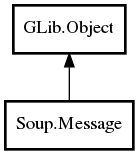

Message
Object Hierarchy:

Description:
public class Message :
Object
Namespace: Soup
Package: libsoup-2.4
Content:
Properties:
Creation methods:
Methods:
- public uint add_header_handler (string signal, string header, Callback callback)
- public uint add_status_code_handler (string signal, uint status_code, Callback callback)
- public void disable_feature (Type feature_type)
- public weak Address get_address ()
- public unowned URI get_first_party ()
- public MessageFlags get_flags ()
- public HTTPVersion get_http_version ()
- public bool get_https_status (out TlsCertificate certificate, out TlsCertificateFlags errors)
- public unowned URI get_uri ()
- public bool is_keepalive ()
- public void set_chunk_allocator (owned ChunkAllocator allocator)
- public void set_first_party (URI first_party)
- public void set_flags (MessageFlags flags)
- public void set_http_version (HTTPVersion version)
- public void set_redirect (uint status_code, string redirect_uri)
- public void set_request (string content_type, MemoryUse req_use, uint8[] req_body)
- public void set_response (string? content_type, MemoryUse resp_use, uint8[] resp_body)
- public void set_status (uint status_code)
- public void set_status_full (uint status_code, string reason_phrase)
- public void set_uri (URI uri)
Signals:
Fields: